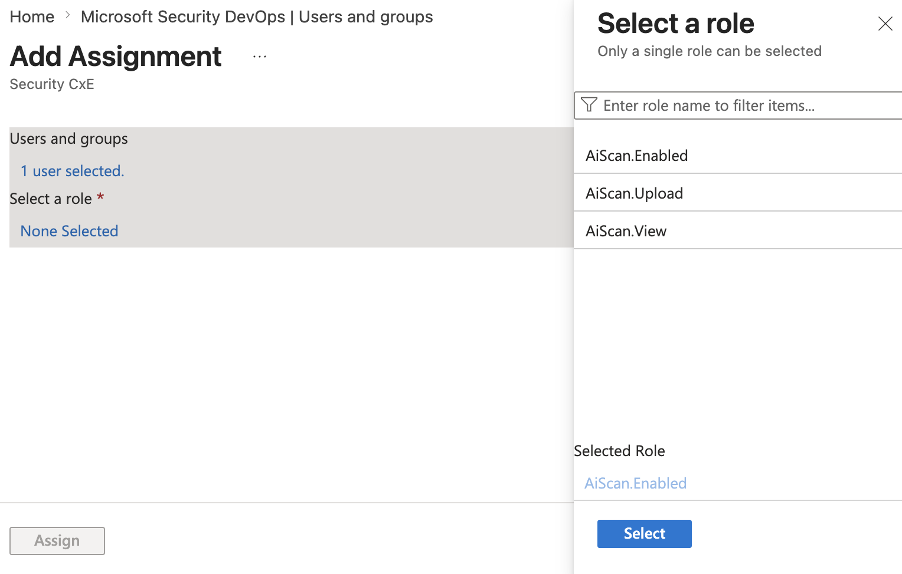

Defender CLI 설정 (인증)
로컬 또는 CI/CD 파이프라인에서 스캔을 실행하기 위한 두 가지 인증 방식(앱 기반 · 대화형)을 구성합니다.
인증 방식과 필요 권한
| 방식 | 용도 | 필요 권한 |
|---|---|---|
| 앱 기반(App-based) | CI/CD 등 비대화형 자동화 | 앱 등록·권한 추가에 Application Administrator, 관리자 동의에 Global Administrator. 앱에 AIScan.enabled(스캔) / AIScan.Upload(업로드) 권한. |
| 대화형(Interactive) | 로그인 사용자의 로컬 터미널 스캔 | Security Administrator + Defender 통합 RBAC 권한. |
Microsoft Defender Code 엔터프라이즈 앱 설치 (필요 시)
두 방식 모두에 필요합니다. E5 라이선스 테넌트는 온보딩 중 자동 프로비저닝되므로 스크립트 실행이 불필요합니다. E5가 아니면 아래를 수행합니다.
winget install -e --id Microsoft.AzureCLI
# Grant-DefenderAdminConsent.ps1 저장 후 실행
./Grant-DefenderAdminConsent.ps1 -TenantId <tenant-id>Azure 로그인 흐름을 완료합니다. Azure CLI에 표시된 코드를 복사한 다음, 리디렉션된 URL에서 해당 코드로 로그인합니다. 로그인 후 Entra ID > Overview에서 Microsoft Defender Code를 검색해 Enterprise applications에 나타나는지 확인합니다. (스크립트 전문은 관리자 동의 스크립트 참고.)
앱 기반 인증
- Azure 포털 > App registrations > New registration으로 앱 등록.
- Manage > API permissions > Add a permission > APIs my organization uses에서 Microsoft Defender Code 검색.
- Application permissions에서 AIScan.enabled(스캔)·AIScan.Upload(업로드) 추가. (AIScan.View는 현재 권한에 영향 없음.)
- Global Administrator가 Grant admin consent로 동의.
- Certificates & secrets > New client secret 생성 후 값을 안전하게 저장(재확인 불가). Application (client) ID·Directory (tenant) ID 기록.

Users and groups > Add Assignment 화면에서 Select a role 패널에 AiScan.Enabled, AiScan.Upload, AiScan.View 역할이 표시된 모습">CI/CD 자격 증명 구성
다음 값을 CI/CD 플랫폼의 암호화된 시크릿으로 저장하고, 스캔 잡에 환경 변수로 노출합니다.
DEFENDER_ASPM_TENANT_ID
DEFENDER_ASPM_CLIENT_ID
DEFENDER_ASPM_CLIENT_SECRETDEFENDER_ASPM_TENANT_ID와 DEFENDER_ASPM_CLIENT_ID는 Microsoft Entra ID의 앱 등록 개요(Overview) 페이지에서 디렉터리(테넌트) ID와 애플리케이션(클라이언트) ID 값을 각각 복사합니다. DEFENDER_ASPM_CLIENT_SECRET은 동일한 앱 등록에서 새 클라이언트 암호를 만든 직후 값을 복사하여 파이프라인 시크릿 스토어에 안전하게 저장합니다.
대화형 인증
셸에 테넌트 환경 변수를 설정한 뒤 device code 로그인 흐름으로 로그인합니다.
DEFENDER_DFD_TENANT_ID=<tenant-id>
az login \
--tenant <DEFENDER_DFD_TENANT_ID> \
--scope c2fd607e-fe6e-41bd-ae58-08e2f24014aa/Defender.InteractiveLogin \
--allow-no-subscriptions \
--use-device-code콘솔의 device code를 복사해 브라우저 로그인 페이지에서 해당 테넌트 접근 권한이 있는 계정으로 로그인하고, 코드를 붙여넣어 인증을 완료합니다. 그런 다음 콘솔로 돌아와 Azure CLI 세션이 완료될 때까지 기다립니다.
c2fd607e-fe6e-41bd-ae58-08e2f24014aa는 Microsoft Defender Code 1st-party 앱 ID입니다.